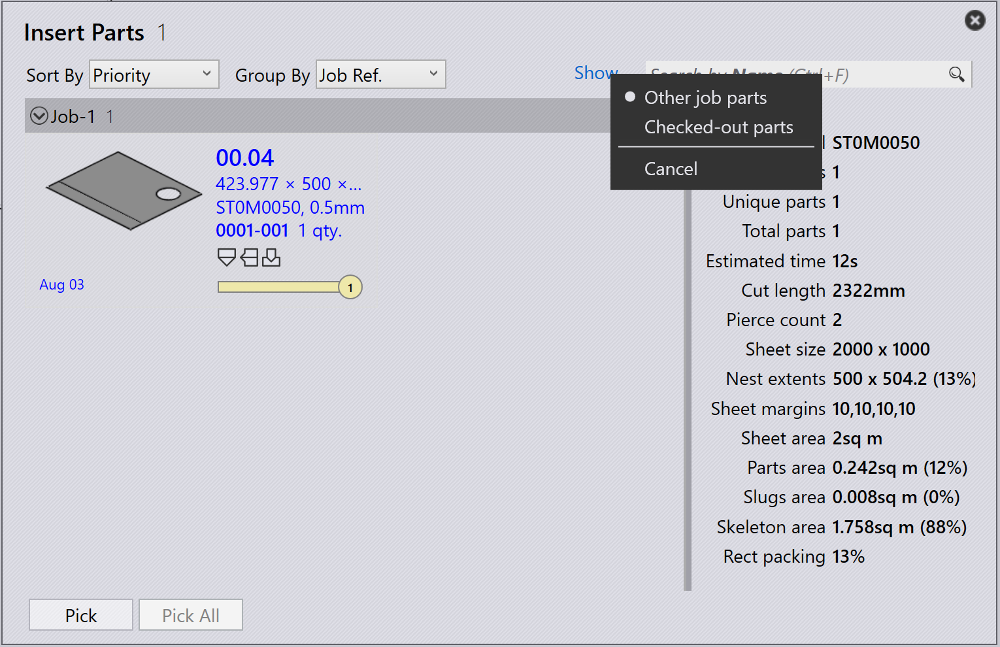

Przepakowywanie
TruSmartCAM nie posiada oddzielnego modułu przepakowywania. Zamiast tego przepakowywanie jest obsługiwane za pomocą opcji na poziomie zadania job, które dają elastyczność w sposób łączenia części.
Istnieją trzy sposoby wykonania przepakowywania.
-
Przepakowywanie za pomocą Mix parts from multiple Jobs.
-
Ręczne przepakowywanie za pomocą kreatora interaktywnego Add Parts.
-
Ręczne przepakowywanie za pomocą TecZone.
Przepakowywanie za pomocą mix parts from multiple Jobs
-
Aby włączyć tę opcję, przejdź do factory → settings → Job → Nest settings → Mix parts from multiple Jobs.

-
Po włączeniu ta opcja umożliwia grupowanie części z różnych zadań job razem podczas automatycznego lub interaktywnego nestingu, co skutkuje połączonym pakowaniem lub nestingiem.
-
Na przykład:
-
Job-1 ma 1 część, Job-2 ma 1 część.
-
Gdy opcja Mix parts from multiple Jobs jest włączona, TruSmartCAM może przepakować te 2 części w jeden zoptymalizowany nest.
-


-
Bez tej opcji części z każdego zadania job pozostają oddzielone podczas nestingu/pakowania z różnymi nazwami układów.
-
Przepakowywanie można również wykonać ręcznie bez włączania tej opcji.
Ręczne przepakowywanie za pomocą kreatora interaktywnego add parts
-
W widoku układu wybierz części, które chcesz przepakować.
-
Kliknij część prawym przyciskiem myszy i wybierz Add Parts… z panelu układu.

-
Postępuj zgodnie z instrukcjami w kreatorze, aby ukończyć proces przepakowywania.
-
Wybierz Show other job parts i dodaj je do bieżącego zadania job.

-
Przejrzyj zmiany i potwierdź przepakowywanie.

Więcej szczegółów znajdziesz w Add Parts.
Ręczne przepakowywanie za pomocą TecZone
-
Otwórz TecZone, klikając
 .
.

-
W interfejsie TecZone kliknij Add.

-
Pojawia się nowe okno, w którym możesz wybrać części do przepakowania. Kliknij Show…, a następnie wybierz Other job parts. Po dokonaniu wyboru kliknij Pick.

-
Pojawia się nowe okno, w którym możesz określić, gdzie część ma zostać przepakowana.
-
Kliknij Save changes to TruSmartCAM, a przepakowany układ będzie dostępny w TruSmartCAM.